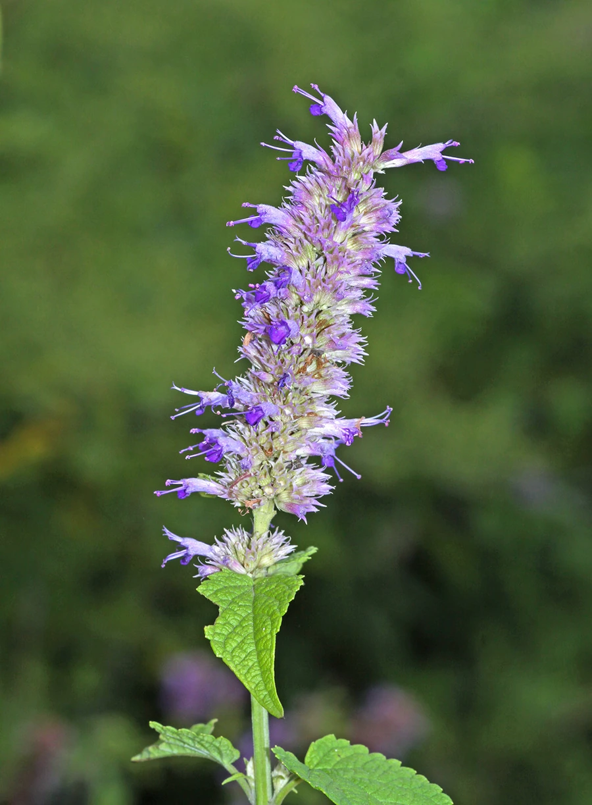

农作物与经济植物 · 植物界
藿香 Agastache rugosa

唇形科多年生草本，茎四棱、叶揉碎有浓烈香气，是中国传统芳香药材与调味香草，也可作蜜源植物。
- 分类
- 门被子植物门纲木兰纲目唇形目科唇形科属藿香属
- 栖息环境
- 路边、溪边、林缘与村旁荒地，喜温暖湿润、向阳
- 地理分布
- 原产中国与东亚，中国南北各地栽培或逸生，朝鲜、日本也有分布
- 保护级别
- 暂无评估；野生与栽培种群均较常见
物种志
藿香为唇形科藿香属多年生草本，株高 0.5–1.5 米，茎四棱，上部多分枝，被短柔毛。叶对生，卵形至心形，长 4–9 厘米，边缘有粗齿，揉碎后有浓烈芳香气味。轮伞花序多花，密集成顶生穗状花序，花冠淡紫蓝色，二唇形，花期 6–9 月；小坚果倒卵形，褐色。
藿香原产中国与东亚，中国各地多有栽培或逸生，常生于路边、溪边与林缘。全草含挥发油，主要成分为广藿香醇、柠檬烯等，是藿香正气类中成药的原料之一，民间也用于煮水消暑、解表化湿。嫩叶可作调味香草，用于炖鱼、煮粥。栽培喜温暖湿润、阳光充足，适宜疏松排水良好的土壤，播种或分株繁殖，生长旺季需充足水分。它花穗长而花蜜丰富，是蜜蜂与蝴蝶喜爱的蜜源。
形态与习性
- 原产地中国与东亚地区
- 株高0.5–1.5 米，茎四棱、上部多分枝
- 香气全草含挥发油，揉碎有浓烈芳香
- 用途藿香正气类药材原料，嫩叶调味，蜜源
- 栽培喜温湿向阳，播种或分株繁殖
- 采收夏秋花期前割取地上部，阴干入药
趣味知识
- 藿香正气水的气味就来自藿香等芳香药材的挥发油，夏天常被用来解暑。
- 它的花穗长而密集，花蜜丰富，开花时常见蜜蜂与蝴蝶聚集。
- 藿香与广藿香是两种植物，前者耐寒、中国原产，后者主产东南亚。
- 嫩叶裹面糊油炸是部分地区的时令吃法，香气独特。